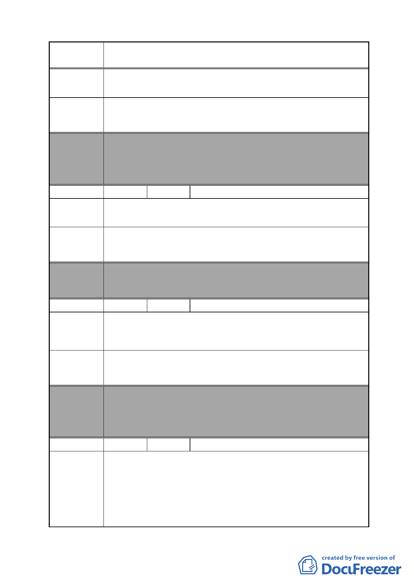

案 名 變更臺北市南港區鐵路地下化沿線土地主要計畫案
陳情理由
建議辦法
建議本區為商三區，不可設為特區，因為我們位於臺北市忠
孝東路邊，是 30 米道路。
我們設商三區，可設專案管理，但絕對絕對不可設「特區」，
我們是不用回饋的。
委員會
決議
編號
陳情理由
建議辦法
本案除文字誤繕應再作修正外，其餘依市府本次會議所送修
正計畫書內容通過。
（依市府本次會議所送修正計畫書，本項陳情地點非屬計畫
範圍）
42 陳情人 黃敏修
南港路 3 段及東新街以東地區，人口密度高又近松山車站，
原松山國小狹小。
建議在鐵路調車場西面增設國小用地，以利小學生就讀。
委員會 本案除文字誤繕應再作修正外，其餘依市府本次會議所送修
決議 正計畫書內容通過。
編號
陳情理由
建議辦法
43 陳情人 謝介倫
世貿財星大樓已在南港 16-17 年，且每日約有 2000-3000 人進
出，並有許多企業。不應該被設為公園預定地，這樣會影響
企業主且增加其財務負擔。
將世貿財星大樓刪除在外，如聯華實業不納入市地重劃區，
或者是變更為商業用地。
委員會
決議
編號
陳情理由
本案除文字誤繕應再作修正外，其餘依市府本次會議所送修
正計畫書內容通過。
（依市府本次會議所送修正計畫書，業將陳情地點剔除於市
地重劃範圍）
44 陳情人 宋則範
1.按「變更台北市南港區鐵路地下化沿線土地主要計畫案」第
43 頁（五）：「本計畫範圍內人口密集地區得經本府同意後
剔除納入重劃範圍內」。向陽路 84 號至 110 號是人口密集的
地區，故應予以剔除。
2.向陽路 84 號至 110 號有些住戶於明末清初就世代長居此
地，土地卻不斷被政府強迫徵收，現在就連這最後的棲身之
- 47 -